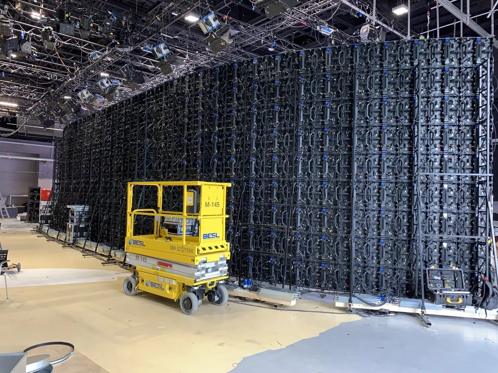

By Cassie
What does a Slovenia LED display importer need to know? Importing LED displays into Slovenia means entering the EU single market through the port of Koper, applying CE marking and WEEE producer registration, accounting for import VAT, and specifying equipment for a continental climate with cold winters. This 2026 guide explains each step.
Slovenia is a small but open EU economy with a developed retail, hospitality, transport, and events sector, and it serves as a short-sea gateway into Central Europe through the port of Koper. Almost every professional LED display sold in the country is imported from China.
A Slovenia LED display importer who registers for WEEE and VAT before the first shipment, and who confirms the CE technical file, clears goods without difficulty. The obligations that catch new importers out are the producer registration, the labelling rules, and the cold-winter specification.
Because Slovenia is a member of the European Union, goods clear into the EU customs union rather than into a separate national regime. Shipments arrive mainly through the port of Koper, with some air freight through Ljubljana and road freight from north European ports such as Hamburg, Rotterdam, or Trieste.
The importer must hold an EORI number, be registered for VAT in Slovenia, and file the customs declaration through the Slovenian customs system. Duty is assessed under the Common Customs Tariff and value added tax is charged on the duty-paid value.
| Step | What Is Required | Who Handles It |
|---|---|---|
| EORI registration | An EORI number for the importing entity | Importer |
| VAT registration | Slovenian VAT registration | Importer |
| Customs declaration | Entry filed with the Slovenian customs authority | Importer or agent |
| CE technical file | Documentation covering the offered model | Supplier, held by importer |
| WEEE registration | Registration in the national producer register | Importer |
Slovenian customs formalities are administered by the Financial Administration of the Republic of Slovenia. Most importers appoint a customs agent who files electronically and handles release at Koper or at an inland terminal, which is faster than dealing with the terminal directly.
LED displays placed on the Slovenian market must carry CE marking under the applicable EU directives, principally the Low Voltage Directive, the Electromagnetic Compatibility Directive, and the RoHS Directive on hazardous substances. The manufacturer issues a Declaration of Conformity and compiles a supporting technical file.
Separately, Slovenia implements the WEEE Directive on waste electrical and electronic equipment. Any party that first places electrical equipment on the Slovenian market, including an importer, becomes a producer for the purposes of that directive.
As a producer, the importer must register in the national register of producers of electrical and electronic equipment and join a collective take-back scheme. A manufacturer outside the EU cannot register directly, so the importer carries the obligation and should confirm the registration route before the first shipment arrives.
| Requirement | What It Covers | Evidence to Hold |
|---|---|---|
| CE marking | Product conformity for the EU market | Declaration of Conformity for the model |
| Technical file | Drawings, schematics, and test data | Complete file held by the importer |
| WEEE registration | Producer obligation for electronic waste | Registration in the national producer register |
| Take-back membership | Collection and recycling duty | Contract with a collective scheme |
| RoHS evidence | Hazardous substance limits | Test report and supplier declaration |
Keep the CE technical file for ten years after the last unit is placed on the market. Market surveillance authorities in Slovenia and elsewhere in the EU can request it, and a file that cannot be produced stops the product from being sold.
Slovenia applies the EU Common Customs Tariff. LED displays and video display panels usually enter at a low or zero conventional duty rate, but the classification must be confirmed for the exact product being shipped. Value added tax is charged at the standard Slovenian rate on the duty-paid value.
VAT is recoverable for a VAT-registered business, so for a trading importer the tax is a cash flow item rather than a final cost. Duty, freight, and terminal handling are not recoverable and belong in the landed cost calculation from the beginning.
| Cost Element | Basis | Notes |
|---|---|---|
| Customs duty | EU Common Customs Tariff by commodity code | Often low or zero, confirm per code |
| Import VAT | Duty-paid value at the standard rate | Recoverable if VAT registered |
| Customs agent fee | Per declaration | Varies by agent and volume |
| Port and terminal | Per container at Koper | Storage charges after the free period |
| Freight and insurance | By Incoterm and route | Sea legs from South China are long |
Agree the Incoterm deliberately. Under FOB the importer arranges the freight and controls the entry, while under CIF or DDP the supplier arranges more. Under DDP the supplier may become the importer of record, which shifts the WEEE obligation and creates problems later if the registration is not in the buyer's own name.
Most importers work through a customs agent who files the declaration electronically and manages release at Koper. Choose an agent who regularly clears electronic goods rather than bulk cargo, because the classification of a display, its power supplies, its control hardware, and its mounting steel differs and each line carries its own treatment.
Confirm that the consignee named on the bill of lading matches the importer of record exactly. A mismatch between the transport document and the customs declaration is one of the most common causes of delay, and correcting it takes far longer than checking it before dispatch.
Slovenia has a temperate continental climate with cold winters, Alpine conditions in the north-west, and milder weather near the coast. Screens installed outdoors or in unheated spaces must tolerate sub-zero temperatures, snow load, and the condensation that forms when cold equipment is brought into a warm building.
For Slovenian sites, low winter temperatures make cabinet construction and sealing the deciding factors — the X Series uses standard 500×500mm cabinets with front/rear service, and the COB EF outdoor series is sealed against snow-melt and moisture ingress.
| Condition | Risk | Specification Response |
|---|---|---|
| Winter temperatures below freezing | Component stress at start-up | Wide operating temperature range |
| Snow and ice load | Structural load on the frame | Structure designed for snow load |
| Condensation on cold surfaces | Moisture inside cabinets | Sealed cabinets and ventilation design |
| Coastal air near Koper | Corrosion of connectors and hardware | Corrosion-protected hardware |
| Summer heat in the interior | Thermal stress on power supplies | Higher temperature rating and derating |
Most LED display cargo reaches Slovenia by sea from South China to Koper, a route that passes through the Suez Canal and the Mediterranean. Some project freight is routed through north European ports and then moved overland by road.
| Stage | Typical Duration | What Can Delay It |
|---|---|---|
| Production | 15 to 25 working days | Component availability and factory queue |
| Inland to port and export | 3 to 5 days | Booking availability at peak season |
| Sea freight to Koper | Varies by carrier and routing | Transshipment and carrier schedule |
| Import clearance | 1 to 3 days | Documentation queries and inspection |
| Inland delivery | 1 to 3 days | Distance and site access |
Ask every candidate the same questions and record the answers in writing. For Slovenian projects the CE evidence, the product information duties, and the cold-weather specification matter as much as the price.
| Question | What a Strong Answer Looks Like | Warning Sign |
|---|---|---|
| CE documentation | Declaration of Conformity and test reports for the model | Certificate promised after dispatch |
| WEEE support | Confirmation of the importer registration route | No understanding of the obligation |
| Cold-weather rating | Stated operating temperature range | Range not specified |
| Power supply | Named brand and stated input range | Brand only, no part number given |
| Packaging standard | Crating method described for sea freight | Not addressed at all |
Confirm the components in writing and require written approval for any substitution. A supplier facing a component shortage may change a part quietly, and the change only appears when the screens arrive and the CE file no longer matches the delivered goods.
Asia Vision Technology manufactures LED displays in Shenzhen and supplies importers, distributors, and contractors across Europe. The factory prepares CE technical files and test reports for the models it ships, packs for long sea routes, and holds spare parts for the stated warranty period.
For Slovenian projects the company supplies rental cabinets for events, fine pitch screens for retail and corporate work, and outdoor displays rated for cold winters and snow load. OEM and ODM production is available for distributors building their own range.

Related reading: Moldova LED Display Importer Guide 2026: CE Rules and Duty